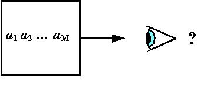
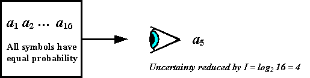
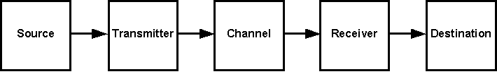
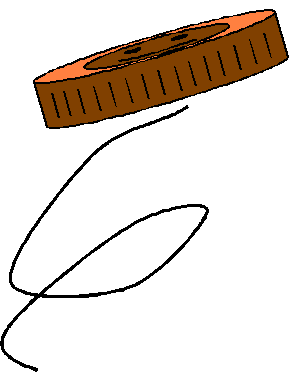
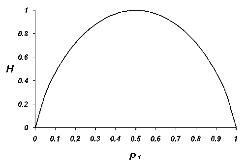
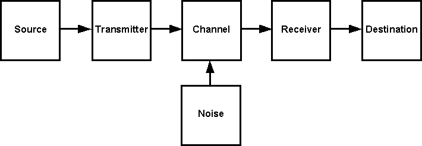
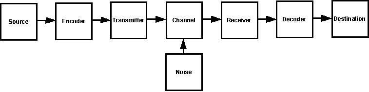

Andere Links:
|
In diesem Artikel
- Claude Shannon und die klassische Informationstheorie
- Informationsquellen
- Information, Entropie und Unsicherheit
- Bedingte und gemeinsame Entropie
- Implikationen für die Kommunikation
- Information und Rauschen
- Shannon-Entropie vs. thermodynamische Entropie
- Links
Claude Shannon und die klassische Informationstheorie[Top]
Die moderne digitale Kommunikation beruht auf der Informationstheorie, die in den 1940er Jahren von Claude E. Shannon erfunden wurde. Shannon veröffentlichte erstmals A Mathematical Theory of Communication im Jahr 1947–1948 und veröffentlichte gemeinsam mit Warren Weaver The Mathematical Theory of Communciation im Jahr 1949. Dieses Werk wird weiterhin von der University of Illinois Press veröffentlicht. Die Informationstheorie, manchmal auch als Klassische Informationstheorie im Gegensatz zur Algorithmischen Informationstheorie bezeichnet, bietet ein mathematisches Modell für die Kommunikation. Obwohl Shannon sich primär mit dem Problem der elektronischen Kommunikation befasste, hat die Theorie eine viel breitere Anwendbarkeit. Kommunikation findet statt, sobald Dinge kopiert oder von einem Ort und/oder Zeitpunkt zu einem anderen verlegt werden.
Dieser Artikel beschreibt kurz die Hauptkonzepte der Shannon-Theorie. Die mathematischen Beweise sind in vielen Quellen leicht verfügbar, einschließlich der Internet-Links auf dieser Seite. Während die Shannon-Theorie sowohl digitale als auch analoge Kommunikation abdeckt, wird analoge Kommunikation aus Vereinfachungsgründen ignoriert. Andererseits ist die Informationstheorie ein recht technisches Fach, das in der Regel an dritte Semester von Ingenieurstudenten an Universitäten eingeführt wird. Ein echtes Verständnis davon erfordert Kenntnisse in Statistik und Analysis.
Für diejenigen, die sich fragen, wie eine Theorie über Kommunikation möglicherweise mit der biologischen Evolution in Verbindung stehen kann, kann ein Besuch der Webseite von Tom Schneider, Molecular Information Theory and the Theory of Molecular Machines, hilfreich sein. Jedenfalls argumentieren Kreationisten nun gerne über Information, und dieser Artikel bietet nützliches Hintergrundmaterial zum Thema.
Informationsquellen[Oben]
Eine Informationsquelle ist ein System, das aus einem festen Satz von M Symbolen {a1..aM} in einer Sequenz mit einer bestimmten Rate ausgibt (siehe Fig.1). Im einfachsten Fall ist jedes Symbol, das vom System ausgegeben werden könnte, gleich wahrscheinlich. Das Symbol i steht für ein gegebenes Ausgangssymbol aus der Menge {a1..aM}. Wenn alle Symbole gleich wahrscheinlich sind, dann ist die Wahrscheinlichkeit, dass das Symbol i das produzierte ist, pi=P=1/M unabhängig davon, welches Symbol wir im Sinn haben. Zum Beispiel kann die Informationsquelle vier gleich wahrscheinliche Symbole erzeugen (A, B, C und D), dann hat jedes Symbol eine Wahrscheinlichkeit von .25 (das heißt, 25% oder 1/4).
 |
Ein Beobachter ist unsicher, welches der M Symbole ausgegeben wird. Sobald ein gegebenes Symbol ai beobachtet wurde, hat der Beobachter Informationen von der Quelle erhalten. Die Unsicherheit des Beobachters wird reduziert. Die Menge der erhaltenen Informationen kann gemessen werden, da die Anzahl der möglichen Symbole bekannt ist. Nach Definition wird die Größe der Information I, die vom System beobachtet wurde, wie folgt angegeben:
I = log2 M=-log2P,
und die Maßeinheit sind Binärstellen, oder Bits. Die Maßeinheit hängt von der Basis des Logarithmus ab. Meistens verwendet die Informationstheorie den Logarithmus zur Basis 2 (log2). Jede andere Logarithmusbasis würde funktionieren. Wenn wir die Basis 10 verwenden würden, dann wäre die Maßeinheit Dezimalstellen.
Wenn ein System eines von 16 möglichen Symbolen ausgeben kann, erhält der Beobachter für jedes beobachtete Symbol 4 Bits an Information. Das heißt, es reduziert die Unsicherheit des Beobachters um 4 Bits (siehe Abb. 2). Die Verwendung eines Logarithmus zur Messung von Information ist Ralph V.L. Hartley zu verdanken, dessen 1928er Papier von Shannon zitiert wird.
 |
Es ist leicht, den Nutzen dieser Definition zu erkennen. Wenn eine Informationsquelle, die jedes der 128 grundlegenden ASCII-Symbole mit gleicher Wahrscheinlichkeit ausgeben kann, ein Symbol erzeugt, erhält der Beobachter 7 Bits an Information, genau die Anzahl der Bits, die zur Kodierung des grundlegenden ASCII-Symbolsets verwendet werden. (ASCII steht für American Standard Code for Information Interchange, das seit vielen Jahren in Telegrafiermaschinen und Computern verwendet wird. Natürlich erzeugt eine tatsächliche ASCII-Informationsquelle nicht 128 gleichwahrscheinliche Symbole, aber zur Vereinfachung nehmen wir jetzt an, dass sie das tut.)
 |
Shannon beschreibt ein Kommunikationssystem als eine Informationsquelle, Sender, Kanal, Empfänger und ein Ziel (siehe Abb. 3). Das Ziel ist unser Beobachter. Eine Grundvoraussetzung für ein Kommunikationssystem ist, dass das Symbol an der Informationsquelle und das Symbol am Ziel mit hoher Zuverlässigkeit übereinstimmen. Shannon hatte eine entscheidende Erkenntnis in Bezug darauf: es ist egal, ob das Symbol etwas bedeutet. Es zählt nur, ob das Symbol an der Informationsquelle und am Ziel identisch ist. Diese Erkenntnis, die Bedeutung muss ignoriert werden, ermöglichte es Shannon, ein funktionierendes mathematisches Modell für Information zu erstellen.
Nächstens betrachten wir, dass von einer Informationsquelle ausgegebene Symbole nicht gleichwahrscheinlich sein müssen. Nehmen wir an, die Symbole {a1..aM} treten mit Wahrscheinlichkeiten p1..pM auf. Da {a1..aM} alle möglichen Symbole sind, ist die Summe der Wahrscheinlichkeiten pi über alle i gleich 1. Da der Beobachter nicht weiß, welches das nächste Symbol in der Ausgabesequenz sein wird, wird die Informationsquelle als stochastischer Prozess behandelt. Das heißt, wir gehen davon aus, dass die ausgegebenen Symbole zufällig sind und mit den angegebenen Wahrscheinlichkeiten auftreten.
Ein einfaches Beispiel für einen stochastischen Prozess ist eine Person, die eine Münze immer wieder wirft (siehe Abb. 4). Die Ergebnisse sind manchmal Kopf und manchmal Zahl, aber wir können die Ergebnisse für einen bestimmten Münzwurf nicht vorhersagen. Wir nehmen natürlich an, dass die Münze eine faire Münze ist, die bei einem Wurf eine 50%ige Chance auf Kopf und eine 50%ige Chance auf Zahl hat. Wenn wir die Sequenz der Münzwürfe aufzeichneten, könnte sie so aussehen wie HHTHTHHTHTTTTHTHHT...
 |
Das nächste benötigte Konzept ist eine endliche Automaten. Dies ist eine Art Maschine, die eine endliche Anzahl von Bedingungen oder Zuständen hat, in die sie sich zu jedem gegebenen Zeitpunkt befinden kann. Ein Lichtschalter hat beispielsweise zwei Zustände – EIN und AUS. Eine endliche Automaten muss nicht physisch existieren. Es könnte einfach ein mathematisches Modell auf Papier oder in einem Computer sein. Der Zustand der Maschine kann aufgezeichnet werden, während die Zeit vergeht, wodurch eine Sequenz entsteht, genau wie beim Münzwurf. Wenn wir die Position eines Lichtschalters im Schlafzimmer eines hyperaktiven Kindes alle 15 Minuten aufzeichneten, könnte es sogar ziemlich zufällig aussehen, wie EIN - EIN - AUS - EIN - AUS - EIN - EIN - AUS - EIN - AUS - AUS - AUS - AUS - EIN - AUS - EIN - EIN - AUS... genau wie beim Werfen einer Münze.
Wir können nun eine Informationsquelle als eine Art Zufallszustandsmaschine modellieren, die von Zustand zu Zustand springt, wobei jeder Zustand dem nächsten Ausgabesymbol entspricht. Wir können weiterhin die durch Beobachtung des Symbols i empfangene Information in Bezug auf seine Wahrscheinlichkeit angeben:
Ii=-log2pi
Wenn man die Informationsquelle auf diese Weise betrachtet, ist es vernünftig anzunehmen, dass die Wahrscheinlichkeit ihres nächsten Zustands von ihrem aktuellen Zustand abhängt. Zum Beispiel würde ein Lichtschalter im Schlafzimmer eines sesshaften Achtzigjährigen wahrscheinlich kaum alle 15 Minuten wechseln: AN - AN - AN - AN - AN - AN - AUS - AUS - AUS - AUS...
Betrachten wir einen einzelnen Zustandswechsel. Unsere Zustandsmaschine könnte vom Zustand i zum Zustand j wechseln. Dieser Zustandswechsel hat eine bestimmte Wahrscheinlichkeit. Wir können die Wahrscheinlichkeit beschreiben, dass j auf i folgt, als p(j|i). Die Notation p(j|i) wird laut gelesen als "die Wahrscheinlichkeit von j gegeben i." Wenn Sie Shannons Artikel lesen, beachten Sie, dass er eine weniger konventionelle Notation pi(j) verwendet, anstatt p(j|i).
Um die Dinge einfach zu halten, lassen wir unseren Zustandsautomaten nicht daran erinnern, in welchem Zustand er sich zuvor befand. Er weiß nur, in welchem Zustand er sich gerade befindet. Das bedeutet, dass die Wahrscheinlichkeit für seinen nächsten Zustand nur vom aktuellen Zustand abhängen kann. Er kann nicht davon abhängen, wie der Automat in den aktuellen Zustand gelangt ist. Wenn wir dann alle möglichen Zustandsübergänge für den Automaten betrachten, können wir die Menge der Zustandsübergangswahrscheinlichkeiten notieren. Für jedes Symbol i ist die Summe aller p(j|i) über j gleich 1. Die Menge der Zustandsübergangswahrscheinlichkeiten für unseren Lichtschalter lautet:
{ p(ON|ON), p(ON |OFF), p(OFF|ON), p(OFF|OFF) }
Es ist leicht zu erkennen, dass p(ON|ON) + p(OFF|ON) = 1, und auch dass p(ON|OFF) + p(OFF|OFF) = 1.
Ein stochastischer Prozess dieser Art, bei dem die Wahrscheinlichkeitsverteilung des nächsten Zustands vom aktuellen Zustand abhängt, aber von nichts Früherem, wird als diskreter Markov-Prozess bezeichnet. Shannon stellt Informationsquellen als diskrete Markov-Prozesse dar. Das heißt, die Informationsquelle wird als Zufallsprozess angenommen, der eine Sequenz von Symbolen aus einem festen Symbolsatz ausgibt, wobei die Wahrscheinlichkeit jedes neuen Symbols nur vom vorhergehenden Symbol abhängt. Der Zustandsautomat kann nichts davor erinnern.
Eine ergodische Prozess ist eine spezielle Klasse von Markov-Prozessen. Bei einem ergodischen Prozess sind alle Sequenzen, die er erzeugen kann, in ihren statistischen Eigenschaften identisch. Ist die Informationsquelle ergodisch, so konvergiert die Wahrscheinlichkeit, dass das Symbol j nach N Symbolen auftritt, Pj(N), mit wachsendem N zu einem Gleichgewichtswert. Shannon macht die allgemeine Annahme, dass Informationsquellen ergodische Prozesse sind.
Information, Entropie und Unsicherheit[Oben]
Erinnern Sie sich daran, dass der Beobachter zu Beginn völlig unsicher ist, welche Sequenz von Symbolen aus der Informationsquelle ausgegeben wird. Mit jedem beobachteten Symbol nimmt die Unsicherheit ab. Wir können die Informationsquelle als Zufallsvariable darstellen, da ihr Zustand jeden Wert im Symbolsatz annehmen könnte, und wir nennen sie X, genau wie Shannon. Die Zufallsvariable X kann eines der M Symbole {a1..aM} erzeugen. Jedes dieser Symbole hat eine Wahrscheinlichkeit p1 .. pM, und diese Wahrscheinlichkeiten müssen sich alle zu 1 summieren.
Die Information, die von X erhalten wird, wenn es ein Symbol i erzeugt, ist
IX=-log2pi
Die Entropie von X wird durch ihre mittlere Information definiert:
H(X) = E{IX}=-∑ i(pilog2p i)
Die Notation E{IX} bezeichnet den Erwartungswert von IX, was ein spezifischerer statistischer Begriff als „Mittelwert" ist. Entropie kann auch als mittlere Unsicherheit bezeichnet werden (strikter gesagt, die durchschnittliche Verringerung der Unsicherheit für einen Empfänger).
Warum wird Informationsentropie als gewichtete Summe von Wahrscheinlichkeiten definiert? Hauptsächlich, weil die mit Symbolen verbundenen Wahrscheinlichkeiten im Allgemeinen nicht gleich sind. Betrachten Sie die 26 Buchstaben des englischen Alphabets. Wie Shannon feststellte, kommt der Buchstabe „E" häufiger vor als „Q", die Sequenz „TH" häufiger als „XP", usw. Indem wir Entropie als durchschnittliche Information definieren, erfahren wir etwas darüber, wie vollständig ein Kommunikationskanal genutzt wird.
Die Entropiefunktion H(X) ist maximal, wenn pi=1/M für alle i. Dies macht intuitiv Sinn, da die Unsicherheit am größten ist, wenn alle Ergebnisse gleich wahrscheinlich sind. Andererseits, wenn eine Informationsquelle das Symbol a1 mit einer Wahrscheinlichkeit von .999 und zehn weitere Symbole a2..a11 jeweils mit einer Wahrscheinlichkeit von .0001 erzeugt, sind wir nahezu sicher, dass das nächste Symbol a1 sein wird.
 |
Betrachten Sie eine binäre Informationsquelle, die in der Lage ist, Symbole 0 und 1 zu erzeugen. Ihre Entropie als Funktion der Wahrscheinlichkeit p1 des Symbols 1 ist in Fig.5 dargestellt. (Erinnern Sie sich daran, dass p0=1-p1 gilt, da nur zwei Symbole erlaubt sind und ihre Wahrscheinlichkeiten sich zu 1 summieren müssen). Beachten Sie, dass die Entropie ein Maximum von 1 erreicht, wenn p1=p0=1/2. Wenn beide Symbole gleich wahrscheinlich sind, ist der Beobachter am unsichersten. Die Sequenz von Kopf oder Zahl bei mehreren Würfen einer fairen Münze hat beispielsweise eine maximale Entropie. Auf der anderen Seite ist die Entropie und die Unsicherheit des Beobachters null, wenn die Informationsquelle das Symbol 1 immer mit der Wahrscheinlichkeit p1=1 erzeugt. Wenn die Informationsquelle das Symbol 1 niemals erzeugt, sondern immer das Symbol 0, sind die Entropie und die Unsicherheit des Beobachters ebenfalls null. Durch die Beobachtung eines Ereignisses, das bekanntermaßen niemals wechselt, wird keine Information gewonnen.
Konditionale und gemeinsame Entropie[Top]
Wenn X und Y Zufallsvariablen darstellen, die den Eingang und den Ausgang eines Kanals bzw. bezeichnen, dann ist die bedingte Entropie (d. h. die durchschnittliche Unsicherheit des empfangenen Symbols unter der Bedingung, dass X gesendet wurde) wie folgt definiert:
H(Y|X)=-∑i,j p(xi,yj)log2 p(yj|xi),
die gemeinsame Entropie (bedeutet die durchschnittliche Unsicherheit des gesamten Informationssystems) ist:
H(X,Y)=-∑i,j p(xi,yj)log2 p(xi,yj),
und die Equivokationsentropie (was die durchschnittliche Unsicherheit des übertragenen Symbols nach Empfang eines Symbols bedeutet) ist:
H(X|Y)=-∑i,j p(xi,yj)log2 p(xi|yj).
Die Notation p(A,B) bedeutet die Wahrscheinlichkeit, dass sowohl A als auch B eintreten, während p(A|B) die Wahrscheinlichkeit für das Eintreten von A unter der Bedingung bedeutet, dass B eingetreten ist.
Eine wichtige Beziehung ist:
H(X,Y)=H(X|Y)+ H(Y)=H(Y|X)+H( X).
Folgerungen für die Kommunikation[Oben]
Shannon zeigte, dass für einen Kanal mit Kapazität C und eine Informationsquelle mit Entropie H möglich ist, das codierte Ausgangssignal der Informationsquelle durch den Kanal mit einer durchschnittlichen Rate von bis zu (C/H) -e zu übertragen, wobei e eine beliebig kleine Zahl ist. Es ist nicht möglich, mit einer durchschnittlichen Rate zu übertragen, die C/H übersteigt.
Shannon und R.M. Fano entwickelten unabhängig voneinander eine effiziente Codierungsmethode, die als Shannon-Fano-Technik bekannt ist, bei der die Codewortlänge mit abnehmender Wahrscheinlichkeit des Quellensymbols oder des Quellwortes zunimmt. Die Grundidee besteht darin, dass häufig verwendete Symbole (wie das Buchstabe E) kürzer kodiert werden sollten als selten verwendete Symbole (wie das Buchstabe Z), um das Kanalband optimal zu nutzen, im Gegensatz zur ASCII-Codierung, bei der sowohl E als auch Z dieselben sieben Bits benötigen.
Falls Kommunikation mit Eingabe X und Ausgabe Y stattfindet, ist die Kapazität eines Kanals:
C = Max ( H(X) - H(X | Y) )
Die Funktion Max(H) bedeutet den maximalen Wert von H. Für einen rauschfreien Kanal ist H(X|Y)=0. Da H(X) maximal ist, wenn alle M möglichen Symbole für X gleich wahrscheinlich sind, gilt C=log2M oder C=I(X).
Shannon lieferte zudem die mathematische Grundlage für die Übertragung über einen Rauschkanal (siehe Fig.6). Ein Rauschkanal kann als mit zwei stochastischen Prozessen verbunden betrachtet werden – der Informationsquelle und der Rauschquelle.
 |
Falls X die Informationsquelle und Y die empfangene Information ist, dann ist es durch Verwendung eines neuen Kanals (eines Korrekturkanals) mit einer Kapazität, die der bedingten Entropie H(Y|X) entspricht, möglich, die Korrekturdaten so zu codieren, dass alle Fehler außer einem beliebig kleinen Bruchteil e korrigiert werden können (siehe Fig.7). Falls die Entropie der Informationsquelle H ≤C ist, kann die Informationsquelle mit einer beliebig kleinen Fehlerrate übertragen werden. Falls H>C ist, ist keine Codierungsmethode möglich, bei der die Ambiguität kleiner als H-C ist.
 |
Es gibt viele Beispiele für Fehlerkorrekturcodes in der Literatur. Zu den bekanntesten gehören die Hamming-, Reed-Solomon-, Viterbi- und Fire-Codes.
Information und Rauschen [Zurück nach oben]
Ein wichtiger Punkt, der zu beachten ist, besteht darin, dass sowohl die Informationsquelle als auch die Rauschquelle in Abb. 6 und Abb. 7 stochastische Prozesse sind. Beide könnten als Informationsquellen behandelt werden. Der Hauptunterschied besteht darin, dass der Empfänger an der Informationsquelle interessiert ist und die Rauschquelle ignorieren möchte.
In manchen Fällen wird eine Rauschquelle absichtlich beobachtet, in diesem Fall wird sie zu einer Informationsquelle. Auf der anderen Seite wird manchmal unbeabsichtigt Information von einem Kanal in einen anderen kopiert. Dies wird als Crosstalk bezeichnet, und das Ergebnis ist, dass die uninteressante Informationsquelle eines anderen als Rauschquelle betrachtet wird.
Wenn Wissenschaftler kosmische Hintergrundstrahlung messen, um sie zu untersuchen, ist sie Information. Störungen in einem Kommunikationssystem durch kosmische Hintergrundstrahlung sind Rauschen. Geländehöhenangaben können als zufällig betrachtet werden. Wenn Sie sie aufzeichnen, um eine topografische Karte zu erstellen, sind sie Information. Wenn Sie den Durchmesser eines Planeten messen wollen, sind sie Rauschen. Dieses Konzept, dass die Information einer Person für eine andere Person Rauschen und umgekehrt ist, wird in Laiendiskussionen über die Informationstheorie häufig missverstanden. Um es noch einmal zu betonen: Es ist das Interesse des Beobachters, das einen stochastischen Prozess in eine Informationsquelle verwandelt.
Einige Kreationisten werden argumentieren, dass Rauschen Informationen genau so degradiert wie das zweite Gesetz der Thermodynamik Ordnung, und implizieren, dass das zweite Gesetz auf Informationen anwendbar ist. Aber für Shannons Definition von Information, da wir uns nicht um die Bedeutung kümmern, und da der Unterschied zwischen Information und Rauschen nur von unserem Interesse abhängt, ist dieses Argument nicht haltbar. Wir verwandeln Rauschen einfach in Information, indem wir uns dafür entscheiden, uns dafür zu interessieren, und Information in Rauschen, indem wir uns dafür entscheiden, sie zu ignorieren. Weiterhin geht es um thermodynamische Ordnung um die Anordnung von Molekülen und ähnlichen Objekten, nicht um mathematische Symbole, sodass ihr Argument doppelt falsch ist. Informationssymbole sind mathematische Abstraktionen und müssen sich nicht wie ein bestimmtes physikalisches System (wie eine Sammlung von Molekülen) verhalten, wie im nächsten Abschnitt zu sehen sein wird.
Einige Kreationisten argumentieren zudem für ein Gesetz der Informationserhaltung, ähnlich dem ersten Hauptsatz der Thermodynamik. Wir müssen uns daran erinnern, dass die Energieerhaltung ein Prinzip ist, das durch mehr als 150 Jahre sorgfältiger Datenerhebung etabliert wurde, und hinter der Vorstellung einer Informationserhaltung keinerlei Strenge besteht. In jedem Fall ist dieser vorgeschlagene Gesetz unter Shannons Definition von Information Unsinn. Um Information zu erzeugen, benötigen Sie lediglich einen ergodischen Prozess und einen Beobachter, der ihn beobachtet. Der radioaktive Zerfall von Atomen bietet ein einfaches physikalisches Beispiel. Ein Beobachter des atomaren Zerfalls erhält neue Informationen (welches Atom, zu welcher Zeit, welche Produkte), sobald jedes Atom zerfällt.
Shannon-Entropie vs. thermodynamische Entropie[Oben]
Shannons Informationsentropiefunktion hat genau dieselbe Form wie die Gleichung des H-Theorems von Boltzmann:
H(t) = ∫f ln f dc
wo ∫ das Integralzeichen aus der Analysis ist, ln den natürlichen (Basis e) Logarithmus bedeutet, f die Verteilungsfunktion für Moleküle in einem idealen Gas ist und c der Geschwindigkeitsraum. Das Symbol H wird in der Informationstheorie wegen dieser Ähnlichkeit verwendet.
Interessanterweise ist auch die Brownsche Bewegung (die zufällige thermische Bewegung von Molekülen) ein Markov-Prozess. Aus der H(t)-Formel können wir ableiten:
S = k ln w
wo S die thermodynamische Entropie eines Systems ist, k die Boltzmann-Konstante und w die Unordnung des Systems; das heißt, die Wahrscheinlichkeit, dass ein System in dem Zustand existiert, in dem es sich befindet, relativ zu allen möglichen Zuständen, in denen es sich befinden könnte. Boltzmanns H-Theorem besagt, dass nach langer Zeit f das Gleichgewicht erreicht. Dies ist ähnlich dem, was Shannon über Informationsquellen sagt, die als ergodische Prozesse modelliert werden. Trotz der Ähnlichkeiten sind Shannon-Entropie und thermodynamische Entropie nicht dasselbe. Thermodynamische Entropie charakterisiert ein statistisches Ensemble molekularer Zustände, während Shannon-Entropie ein statistisches Ensemble von Nachrichten charakterisiert.
In der Thermodynamik geht es bei der Entropie um alle möglichen Anordnungen der Moleküle oder Teilchen, und eine höhere Entropie bedeutet, dass weniger physikalische Arbeit aus dem System gewonnen werden kann. In Shannons Verwendung geht es bei der Entropie um alle möglichen Wege, wie Nachrichten von einer Informationsquelle übermittelt werden können, und eine höhere Entropie bedeutet, dass die Nachrichten gleich wahrscheinlicher sind. Entropie in der Informationstheorie bedeutet nicht, dass Informationen nutzloser oder verschlechtert werden; und da es sich um eine mathematische Abstraktion handelt, steht sie nicht direkt mit physikalischer Arbeit in Verbindung es sei denn, Sie behandeln Moleküle informatisch.
Die Shannon-Entropie wurde vom Physiker Léon Brillouin mit einem Konzept in Verbindung gebracht, das manchmal als Negentropie bezeichnet wird. Dieser Begriff wurde vom Physiker und Nobelpreisträger Erwin Schrödinger in seinem 1944 erschienenen Werk Was ist Leben eingeführt, um zu erklären, wie lebende Systeme Entropie in ihre Umgebung exportieren, während sie selbst bei niedriger Entropie verbleiben; mit anderen Worten, es ist das Negative der Entropie. In seinem 1962 erschienenen Buch Wissenschaft und Informationstheorie beschrieb Brillouin das Negentropie-Prinzip der Information oder NPI, dessen Kern darin besteht, dass das Erlangen von Informationen über die Mikrozustände eines Systems mit einer Verringerung der Entropie einhergeht (für die Extraktion von Informationen ist Arbeit erforderlich, und das Löschen führt zu einer Zunahme der thermodynamischen Entropie). Es liegt keine Verletzung des zweiten Hauptsatzes der Thermodynamik vor, da eine Verringerung der thermodynamischen Entropie in einem lokalen System zu einer Zunahme der thermodynamischen Entropie an anderer Stelle führt.
Die Beziehung zwischen der Shannon'schen Informationsentropie H und der Entropie S aus der statistischen Mechanik wurde 1957 von Edwin Jaynes rigoros formuliert. Das Ergebnis ist, dass die Informationsentropie und die thermodynamische Entropie eng miteinander verbundene Metriken sind, aber nicht dieselbe Metrik darstellen. Für die meisten Praktiker der Informationstheorie bis heute stellt dies kein Problem dar, da ihr Feld die Kommunikation und Berechnung unter Verwendung herkömmlicher elektronischer Schaltkreise umfasst, in denen die thermodynamische Bedeutung der Entropie nicht diskutiert wird. Die widersprüchliche Terminologie führt jedoch in Bereichen wie molekularen Maschinen und der Physik der Berechnung zu viel Verwirrung, in denen Informations- und thermodynamische Entropie nebeneinander behandelt werden. Einige Autoren, wie Tom Schneider, argumentieren dafür, das Wort Entropie für die H-Funktion der Informationstheorie fallen zu lassen und stattdessen Shannons anderer Begriff Unsicherheit (durchschnittliche Überraschung) zu verwenden. Weitere Informationen dazu finden Sie unter Information Is Not Entropy, Information Is Not Uncertainty!
Im Gegensatz zur molekularen Entropie kann die Shannon-Entropie lokal reduziert werden, ohne Energie in das Informationssystem einzuführen. Das Durchleiten eines Kanals durch einen passiven Filter kann die Entropie der übertragenen Information reduzieren (ohne dass der Sender dies bemerkt, wird die Kanalkapazität verringert, und somit auch die Entropie der Information auf dem Kanal). Die benötigte Leistung zur Übertragung ist gleich, unabhängig davon, ob der Filter vorhanden ist oder nicht, und unabhängig davon, ob die Informationsentropie reduziert wird oder nicht. Ein anderer Weg, dies zu betrachten, besteht darin, ein Kabel eines Kanals mit mehreren parallelen Kabeln zu durchtrennen. Die durchschnittliche Information, die den Kanal überquert, die Entropie, nimmt ab, ohne dass dies mit der Menge an Energie zusammenhängt, die benötigt wird, um das Kabel zu durchtrennen. Oder schalten Sie die Stromversorgung einer Informationsquelle ab und beobachten Sie, wie sich ihre Ausgabe auf ein einziges Symbol „aus" mit einer Wahrscheinlichkeit von 1 festlegt und eine Informationsentropie von 0 aufweist.
Ein Wort der Vorsicht zur Notation: Für diejenigen, die sich mit der chemischen Thermodynamik auskennen, ist H in der klassischen Informationstheorie nicht Enthalpie, und die beiden Themen sollten nicht verwechselt werden. Ebenso misst das H in der klassischen Informationstheorie eine andere Eigenschaft als das H in der algorithmischen Informationstheorie. Obwohl diese Konflikte in der Notation bedauerlich sein mögen, ist die gesamte Literatur so geschrieben, und jeder, der die Informationstheorie verstehen möchte, wird sich einfach daran gewöhnen müssen.
[Oben]